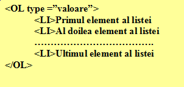

Liste ordonate
Listele ordonate sunt acele liste ale caror elemente sunt marcate logic, sau
cu litere in ordine alfabetica sau cu numere in ordine crescatoare, atat cifre arabe
cat si cifre romane. Liata ordonata incepe cu o eticheta OL (ordered list) si se termina cu /OL.
Fiecare dintre elemente este specificat cu o eticheta LI (list item) iar modul de ordonare
este functie de valoarea atributului type al etichetei OL. Sintaxa construirii unei liste
ordonate este descrisa mai jos:

Atributul type poate avea urmatoarele valori:
type="1" pentru ordonare de tipul 1, 2, 3, 4.....
type="I" pentru ordonare de tipul I, II, III, IV, ....
type="i" pentru ordonare de tipul i, ii, iii, iv,.....
type="A" pentru ordonare de tipul A, B, C, D, .....
type="a" pentru ordonare de tipul a, b, c, d, ....
In continuare sunt relevate cateva exemple de liste ordonate in diferite moduri:
Un alt exemplu...
Iata si un al treilea exemplu:
Inapoi la Liste...